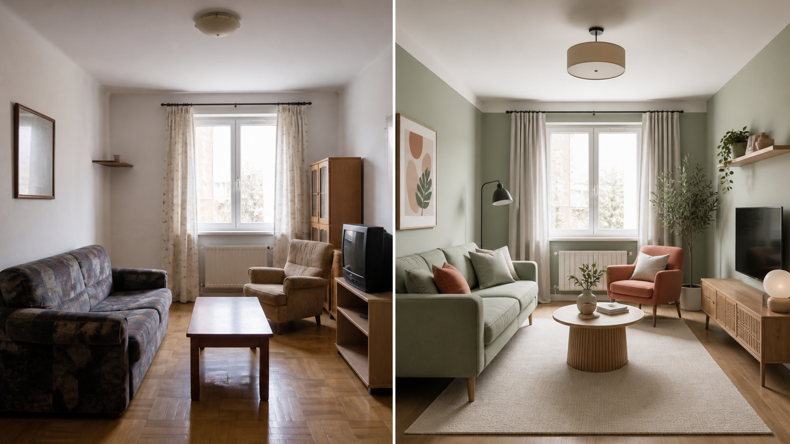

Промтзилла
Редизайн интерьера через ИИ полезен, когда нужно быстро примерить стиль без ремонта: сканди, минимализм, джапанди, современную классику или яркий акцент.

Пошаговая инструкция
- 1Сделай фото комнаты без людей и лишнего беспорядка.
- 2Выбери желаемый стиль и 2-3 цвета, которые точно нравятся.
- 3Загрузи фото и попроси сохранить окна, двери, пол и общую планировку.
- 4Сначала сгенерируй мягкий вариант, потом более смелый.
- 5Отдельно попроси список изменений, которые реально повторить в жизни.
Какой результат просить
Нужен не фантазийный рендер, а понятный план: что перекрасить, что заменить, какие светильники и декор добавить. Для такого сценария можно использовать GPT Image в Study24: загрузи исходные материалы, вставь промт и попроси несколько вариантов.
Промт
RU
Измени интерьер этой комнаты в выбранном стиле: [укажи стиль]. Сохрани: — форму комнаты, окна, двери, пол и высоту потолка; — основные крупные предметы, если я отдельно не прошу их заменить; — реалистичный свет и перспективу. Измени: — цвет стен и текстиль; — мебель, которая плохо сочетается со стилем; — освещение, декор, ковёр, картины и хранение. Сделай интерьер уютным, современным и пригодным для реальной жизни. После изображения дай список конкретных изменений: что купить, что переставить, что перекрасить.
EN
Redesign this room in the following style: [specify style]. Keep: — room shape, windows, doors, floor, and ceiling height; — major furniture pieces unless I ask to replace them; — realistic lighting and perspective. Change: — wall color and textiles; — furniture that does not fit the style; — lighting, decor, rug, wall art, and storage. Make the room cozy, modern, and realistic. After the image, provide a concrete change list: what to buy, move, repaint, or replace.
Важно
Для точной визуализации лучше сделать несколько фото: общий план, проблемный угол, окно и зону хранения.
Теги